GenZvision
How Gen Z Slang Lives and Dies on the Internet
Process Book
1. How We Got Here
Choosing the Dataset
From the start, we wanted a dataset that would be genuinely fun to work with, something that people would immediately connect with, not a dry technical topic. When we found the GenZ Slang Evolution Tracker (2020-2025) on Kaggle, it clicked right away. The dataset has 535,396 rows and 22 columns, which gave us a lot to work with: slang terms, timestamps, origin and usage platforms, regions, age groups, usage contexts, lifecycle phases, sentiment scores, virality metrics, engagement stats (likes, shares, comments), and more. That variety is what really sold us, with 22 columns, we could approach the data from many different angles (temporal, geographic, cross-platform, demographic, emotional) without running out of interesting questions to ask. The volume of data (over half a million observations across 46 unique terms and 22 regions) also meant we could show real patterns rather than anecdotal trends.
Building the Skeleton
Early on, we decided to build a scrollytelling website rather than a traditional dashboard with tabs or filters. A scrollytelling layout lets the user passively discover the story by simply scrolling down, each section reveals the next chapter, like reading an article. This format works well for a narrative-driven project because it imposes a natural reading order: the user sees when terms appear before they see where they spread, and they see how terms age before they explore individual ones. It also avoids the "blank canvas" problem of dashboards where users don't know where to start. We used the Intersection Observer API to trigger each visualization only when the user scrolls it into view, which keeps the page fast and adds a nice reveal effect.
Choosing a Visual Identity
We went with a dark theme (near-black background with purple and pink accents). The main reason was coherence with the subject matter: Gen Z slang lives on platforms like TikTok, Discord, and Twitter, which are typically used at night, on phones, in dark mode. A white academic-looking layout would have felt completely disconnected from internet culture. The dark background also lets glowing elements (hover effects, particle animations, galaxy backgrounds) stand out naturally, and it's easier on the eyes for a long-scrolling site. We picked purple as our primary accent because it felt modern without being overused, and we kept the same color family (purples, pinks, violets) across the entire site so that everything looks like it belongs together.
From Sketches to Code
For Milestone 2, we drew 6 hand-made sketches for the core visualizations we wanted to build. The idea was to plan the visual encoding on paper before writing any code, figuring out which marks and channels would best answer each question. We then tried to reproduce those sketches as faithfully as possible using D3.js. We deliberately chose dynamic, animated visualizations (the bar chart race, the animated bubble chart, the orbiting particle donut) over static charts wherever it made sense. This wasn't the easy option, animations are significantly harder to implement, especially smooth transitions and force simulations, but they make the site far more engaging and interactive. A static bar chart of slang popularity is boring; watching terms overtake each other in real time is genuinely fun.
Expanding Beyond the Original Plan
After finishing the 6 sketched visualizations, we realized we still had room to do more. The dataset has so many columns, age groups, usage contexts, world regions, sentiment, lifecycle phases, that stopping at 6 charts would have left a lot of interesting data unexplored. So we added 5 more sections, each one motivated by a question the existing visualizations didn't answer yet: the Vibe Wheel asks in which real-world contexts each slang term appears, the Chronicle asks when each term was first born and whether some years produced more new slang than others, the Generation Gap asks which age groups adopt each term and whether some words are teen-dominated or multi-generational, the World Map asks how slang adoption differs across global regions, and the Term Explorer asks what the full profile of one specific term looks like, from its usage curve and peak month to its platform, sentiment, and lifecycle phase.
Storytelling and Narrative
For the text on the site, we wanted something that anyone could read and enjoy, not a dry data report. We wrote each section introduction as if we were explaining the data to a friend: casual tone, concrete examples ("One day nobody's heard of skibidi. Three weeks later, your mom says it at dinner"), and specific numbers pulled from the actual data. Between sections, we added short transition sentences that connect one question to the next ("Some terms flash and fade. Others stack up dominance for years. Who wins?"). The goal was to make scrolling through the site feel like reading a story, not browsing a dashboard.
2. From Sketches to Final Product
Below we show each of our 6 original M2 sketches alongside a description of what the final implementation looks like, and what changed along the way.
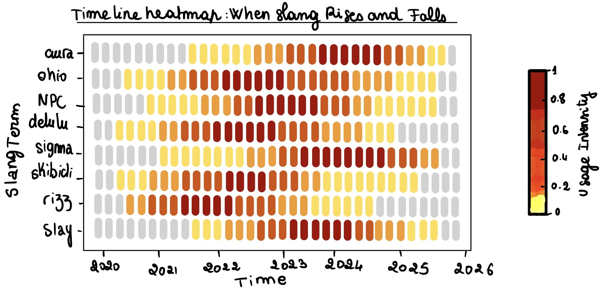
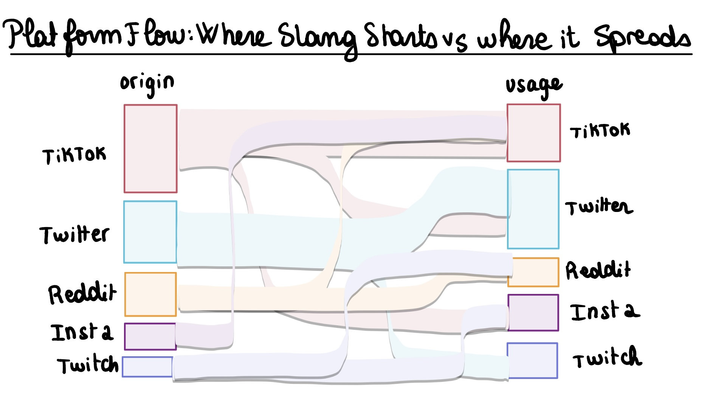
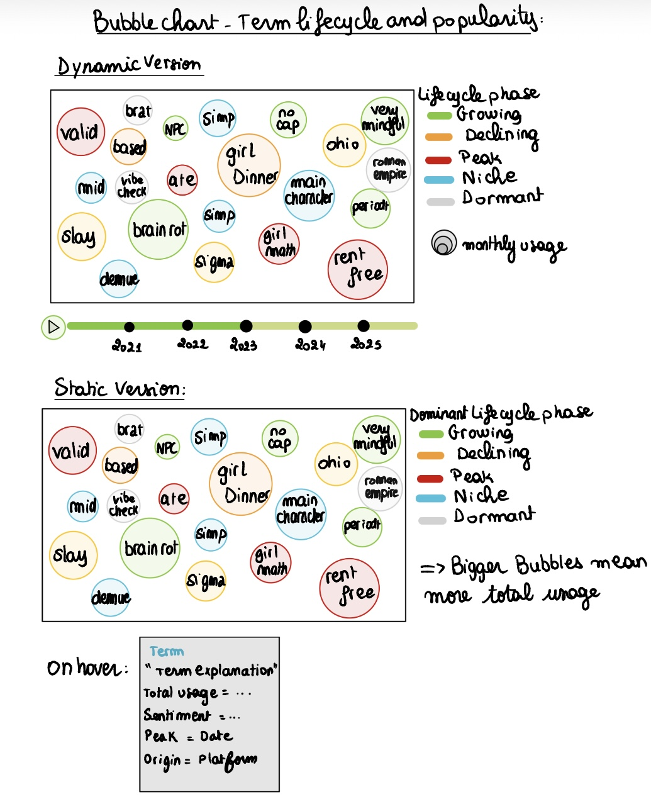
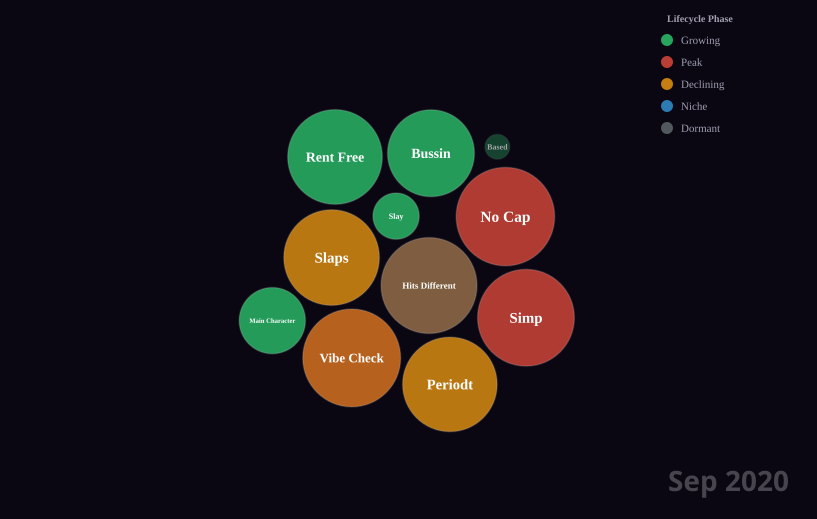
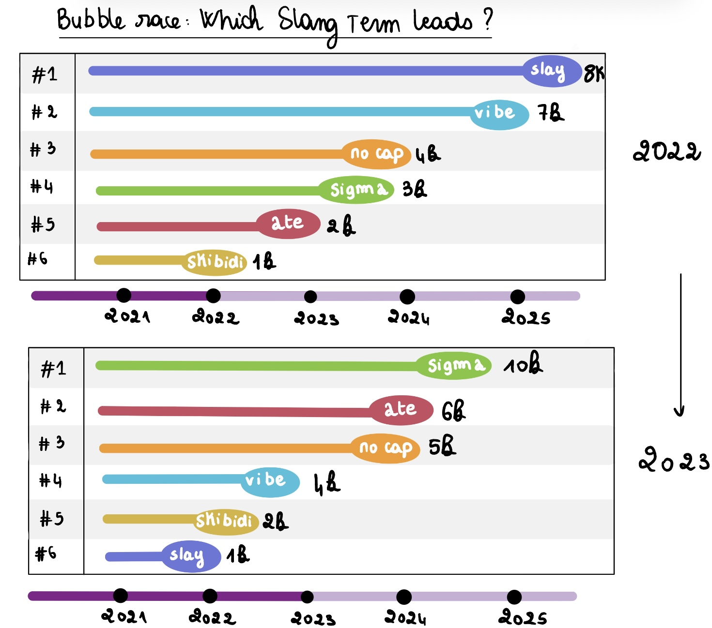
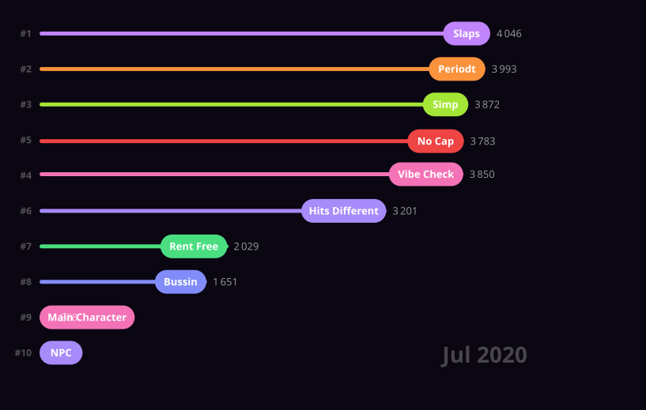
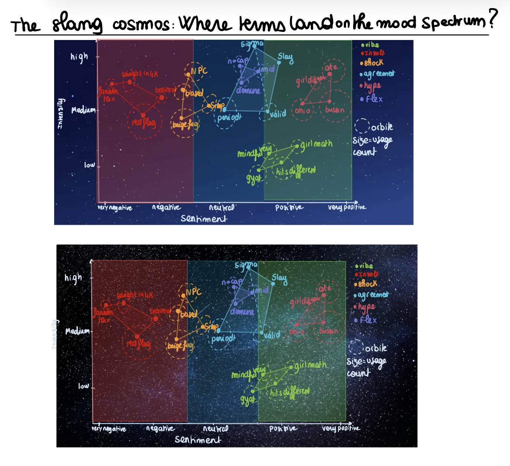
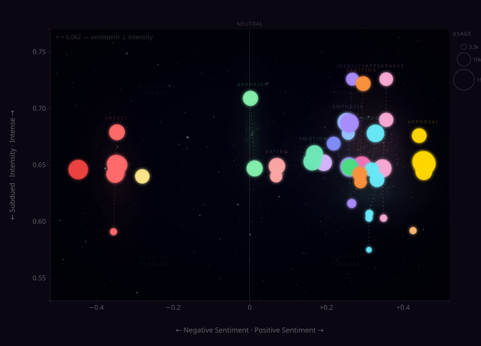
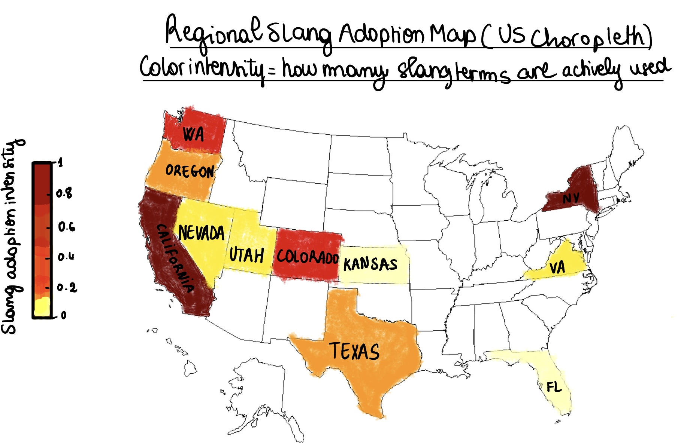
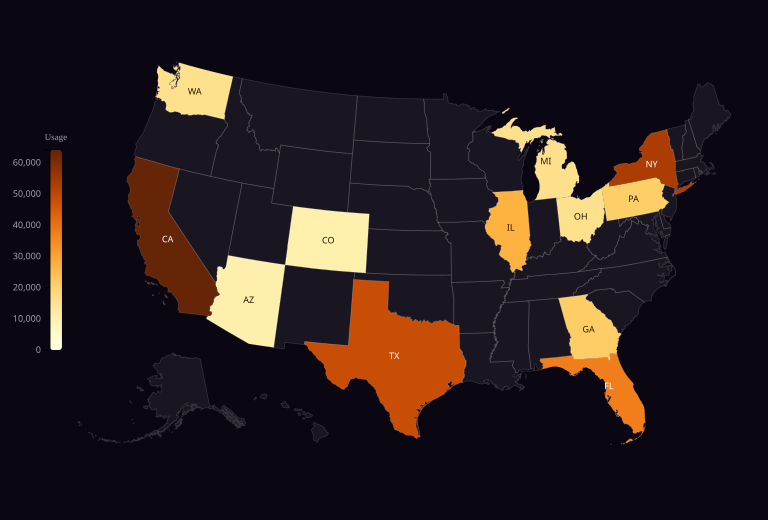
3. Visualizations Added Beyond M2
Several visualizations were not in the M1/M2 plan. They came from questions that naturally arose as we built the story:
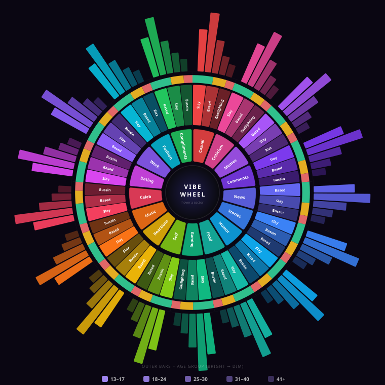
A radial chart with 17 context slices (gaming, dating, memes, food reviews...) showing which terms dominate each context. Inner rings encode sentiment, outer rings encode age. This replaced the ridgeline plot from M2's stretch goals, the wheel packs more dimensions into a single view and is more visually distinct.
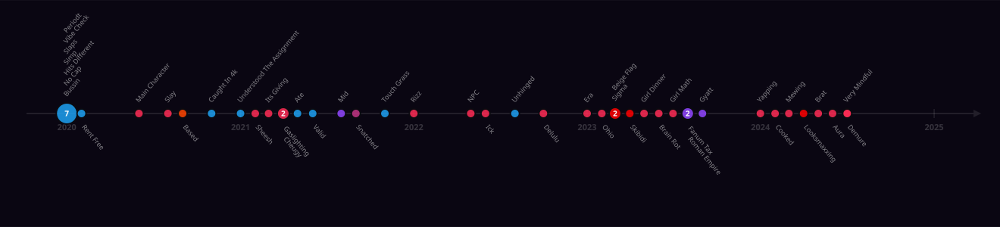
A horizontal timeline showing the exact month each term was first coined. Dot color = origin platform, size = number of terms born that month. 2023 stands out with 11 new terms in a single year. The idea for this visualization came directly from the M2 feedback: our TA suggested we exploit the information of when slang terms first appeared, and we found it judicious to put that on a simple timeline.
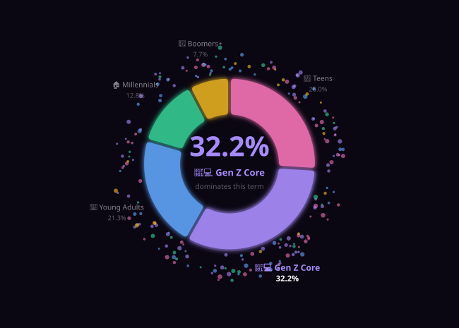
An animated donut chart with 200 orbiting particles showing age group distributions per term. A dropdown lets you switch terms, the arcs morph smoothly (custom attrTween) and particles redistribute by color. Selecting "skibidi" shows around 37% teen usage; "gaslighting" is spread evenly across all ages.
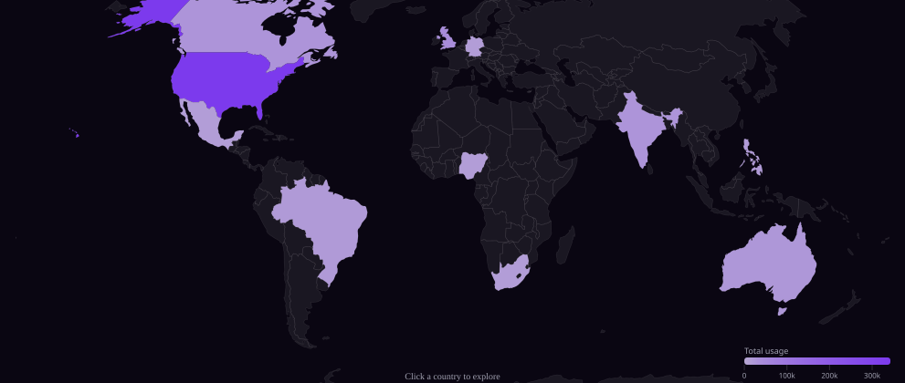
A world choropleth (NaturalEarth1 projection) showing how slang adoption varies across the 22 global regions in the dataset. Same click-to-explore pattern as the US Regional Map: clicking a country opens a side panel with that region's top terms, dominant platform, total usage, and average sentiment. This complements the US-only Regional Map by giving an international perspective.
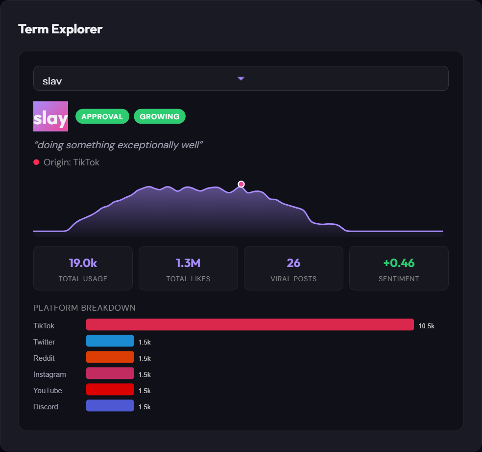
A searchable card explorer where you can look up any term's usage curve, peak month, top platform, sentiment, and lifecycle phase. This is the "details on demand" that closes the Shneiderman mantra we follow across the site.
4. Design Decisions
We chose a dark background (near-black with purple/pink accents) because our audience is students and internet-culture fans. A white academic layout would feel disconnected from the TikTok/Discord world where slang actually lives. Glow effects and particle animations feel natural on a dark canvas.
The data has a natural narrative arc (Rise → Race → Spread → Decline → ...), so a scroll-driven story works better than tabs. We added transition sentences between sections to connect the narrative. Following L12: start with an interesting hook, maintain a linear flow, limit interactivity to key elements.
Each visualization renders only when it scrolls into view (IntersectionObserver). Both a performance choice (11 D3 visualizations at page load would be slow) and a storytelling one, the user discovers each chart as they scroll.
Hovering any data point shows a tooltip. Clicking (where supported) opens a deeper view, side panels on maps, full term profiles. Animated sections have explicit play/pause so the user stays in control. No auto-playing animations.
5. Challenges
The hardest part. Our first attempt just had glowing circles at category centroids, it looked nothing like galaxies. We rewrote the generator 3 times, eventually settling on parametric logarithmic spirals flattened into ellipses (Y compressed by 0.6). Each galaxy has a radial gradient core, 2-4 spiral arms, and is rotated by a random angle. Getting the particle density and color variation right took trial and error.
D3 force simulation has many parameters that interact in non-obvious ways. Bubbles would either overlap, jitter endlessly, or settle into an ugly grid. The final combination: forceManyBody(strength: -30), forceCollide(radius: bubble size * 1.5), forceX/Y(strength: 0.02), alphaDecay(0.05).
When switching terms, the donut arcs need to morph smoothly. D3 doesn't do this automatically for arc paths. We used custom attrTween that stores the previous arc datum on each DOM element and interpolates between old and new, producing smooth continuous transitions.
The world map went through 4 color palette iterations: (1) dark purple, invisible against black background, (2) teal-to-violet, looked illogical as a gradient, (3) light teal-to-bright violet, same problem, (4) monochrome purple (#b8a9d4 → #7c3aed) with a 0.65 power curve, finally worked. Lesson: within-family gradients (same hue, varying lightness) are always more readable.
The Generation Gap donut was initially placed in a two-column section (text left, viz right) which gave it only 337px of width, the outer labels were clipped. We had to switch to a custom stacked layout (text above, full-width viz below) and use a viewBox-based SVG for proper scaling. The .viz-container CSS class had display: flex which collapsed the SVG to 48px wide, debugging that took longer than building the donut itself.
6. Peer Assessment
Click cards inspired by the term-details panels on the live site — one per team member, with a breakdown of what each person led.
7. Conclusion
GenZvision went from 6 hand-drawn sketches to 11 interactive D3.js visualizations. We delivered all 4 M2 core visualizations plus 7 additional ones, replacing one stretch goal (ridgeline plot) with something better (Vibe Wheel) and adding 4 entirely new sections (Chronicle, Generation Gap, World Map, Term Explorer). The core insight the project reveals: slang follows a predictable lifecycle, born on TikTok, adopted across platforms in weeks, peaking in months, fading just as fast. The words change constantly, but the pattern never does.